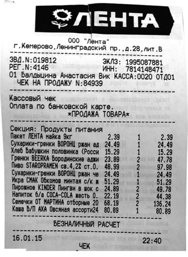
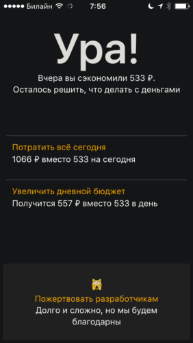
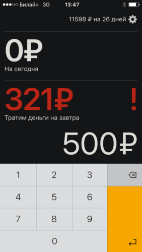

Если у вас нет богатых родителей, хорошо зарабатывающего бойфренда, удачного лотерейного билета или других шальных доходов, то рано или поздно вы начнёте считать деньги.
Как и большинство, я несколько раз пробовал фиксировать расходы. С помощью тетрадки, таблички в Excel, web-сервисов, а в последний раз с помощью приложения для айфона.
Каждый раз я вскоре забрасывал это дело, потому что не очень понимал зачем мне это надо.
Несмотря на то, что я как и все разносил расходы по статьям, пользы от этого было немного. Я не обнаруживал вдруг, как некоторые, что на сигареты уходит слишком много денег, потому что не курю, я не решал сократить расходы на стиральный порошок, потому что это абсурдно, я не начинал экономить на алкоголе, потому что без него сейчас никак.
Почему большинство прекращает считать расходы
У всех существующих систем учёта расходов есть два недостатка.

1. Единицы людей способны, придя домой из «Ленты», сесть и начать разносить чек по статьям. Товары для дома, Алкоголь, Продукты, Игрушки и т.п. Я уверен, что способным на такое людям нет никакой необходимости вести учёт.
2. Ни одна из опробованных мною систем не могла учитывать расходы будущих периодов. Смысл такого учёта в том, чтобы разносить, к примеру, ежегодные расходы на будущий год (период, к которому они относятся). Без такого учёта у вас в июле будет потрачено 60% на продукты, а в августе, когда вы оплачиваете каско для машины, доля продуктов в аналитике упадёт до 10%. Аналитика не работает.
По сути, вся польза записи расходов сводилась к логированию этих самых расходов, чтобы потом можно было посмотреть, сколько, к примеру, стоил шиномонтаж прошлой весной.
В конце прошлого года я полностью пересмотрел подход к учёту личных финансов, и сегодня он базируется на двух принципах.
1. Расчёт дневного бюджета.
2. Долгосрочное бюджетирование.
В этом посте я расскажу о первом из них.
Расчёт дневного бюджета
Смысл в том, чтобы в начале месяца (1 мая — отличный выбор) обозначить сумму, которую вы можете потратить в течение будущего месяца на повседневные расходы.
Характеристика повседневных расходов у каждой семьи может быть своя. Я настоятельно не рекомендую учитывать в этой сумме периодические обязательные существенные траты. Я, к примеру, не учитываю здесь квартплату, покупку абонемента в спортзал, связь, парикмахерскую.
В итоге у вас получится сумма, к примеру, 30 000 рублей. Это 967 рублей на день в мае. Всё, что нужно теперь — ни в коем случае не выходить за пределы этого лимита в течение дня. Если вы дочитали пост до этих слов, то вам, скорее всего, придётся тяжеловато.
Удобней всего вести такой учёт с помощью появившегося недавно приложения с подходящим названием — «Тяжеловато».
Название сервиса, по словам авторов, родилось после знаменитого твита российского музыканта Дмитрия Маликова.
Как у Вас дела вообще ? Тяжеловато приходится ? Или ничего?
— Дмитрий Маликов (@DmitryMalikov) October 24, 2015
Обратите внимание, это не привычное приложение, его пока нет в App Store или в Google Play. Это обычная интернет-страница, поэтому для удобства вынесите закладку на эту страницу на экран.
В программе нет ничего лишнего вроде статей расходов или нескольких кошельков. Смысл её в другом. С её помощью в каждый момент времени вы будете точно знать, сколько денег можно потратить сегодня. Всё, что вам нужно — сразу записывать каждую потраченную сумму.
Если в течение дня удастся сэкономить, то наутро программа предложит вам разделить сэкономленную суму на оставшиеся дни или оставить её только на сегодня.
Если вы вдруг потратите больше, программа предупредит вас об этом и пересчитает дневной бюджет на будущие дни.


Нельзя сказать, что начало пользования программой было идеальным. Первые два месяца месячный бюджет был изначально занижен и заканчивался уже к 20 числу месяца. Сейчас, кажется, всё нормализовалось. Я определил сумму в 30000 рублей. Придётся тяжеловато, но как-нибудь прорвёмся.